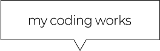
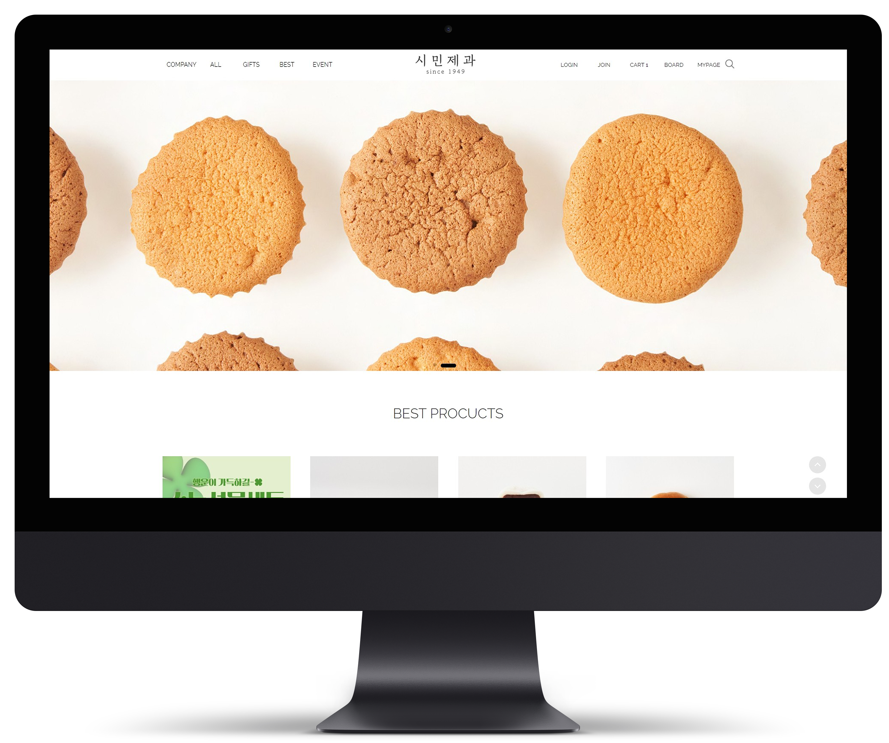
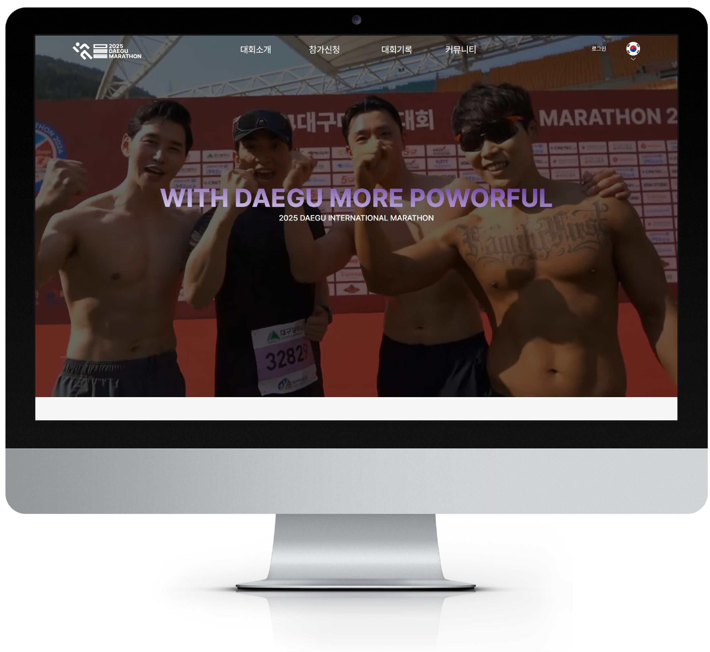
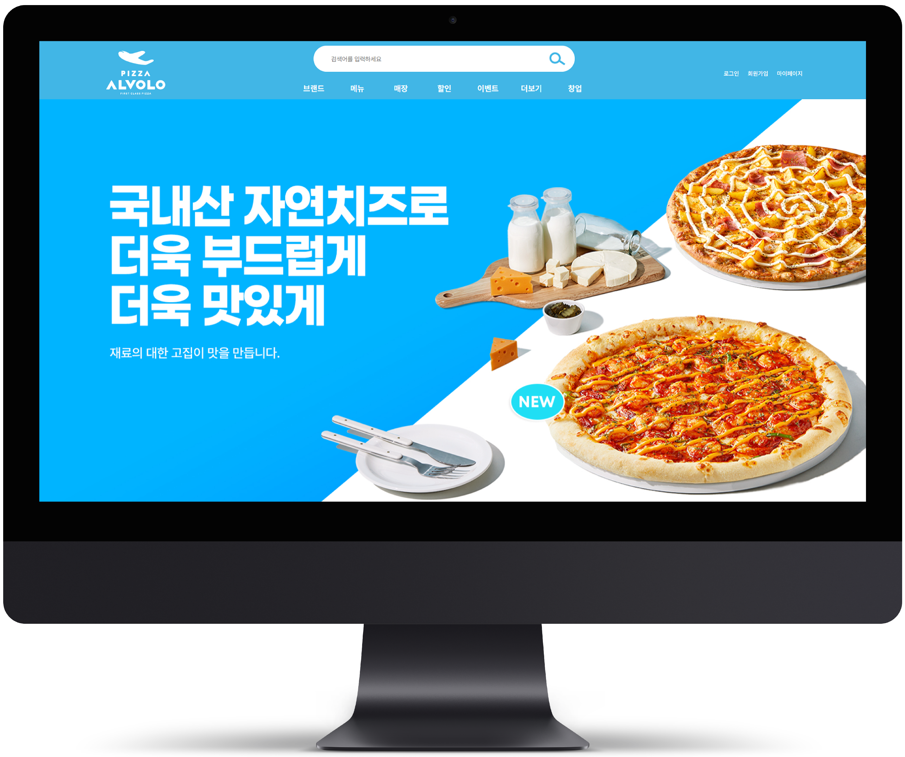

SIMIN BAKARY
CLONE
CODING
포항의 오래된 제과제빵집 시민제과 사이트를 클론코딩 하였습니다.
화이트톤의 깔끔한 레이아웃이 특징인 사이트입니다.
호버 시 변경되며 깔끔하게 인터렉티브한 웹 동작이 특징입니다.
상단의 돋보기 아이콘을 눌렀을 때 검색창도 뜨도록 만들었습니다.


TEAM PROJECT
DAEGU MARATHON
REDESIGN
CODING
대구 국제 마라톤 대회 사이트를 리디자인하여 코딩하였습니다.
기존 사이트의 부족한점을 보완하여 팀 프로젝트로 작업한 작업물입니다.
국제적인 육상대회임을 고취시키고 웹 사이트 방문자들이
대회에 호감을 가질 수 있도록 디자인하였습니다.
또한 다양한 동적 요소를 추가하여 지루하지 않은 느낌을 살렸습니다.
PIZZA ALVOLO
REDESIGN
CODING
피자 프랜차이즈 브랜드 피자알볼로사이트를 리 디자인하였습니다.
피자알볼로의 시그니처 컬러인 블루톤을 그대로 가지고 가면서
화이트와 레드를 함께 사용하여 일관성있는 톤으로 작업하였습니다.
사용자가 브랜드에 좀 더 호감을 가질수 있도록 트랜디한 느낌과
보기에 깔끔한 느낌을 살려 디자인 하였습니다.
